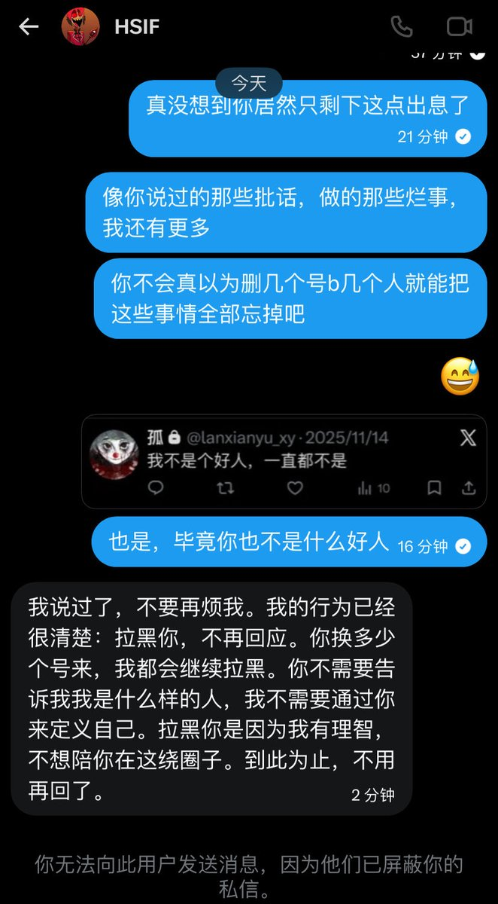

遷鵺_SENNEU
@qianye_zhenyu
永远以自我为中心的人，永远活在自己那个悲情主角的剧本里，你对那些帮助过自己的人说的话就是叫他们滚蛋😅
我只是真心希望你能彻底滚出推特这个地方

遷鵺_SENNEU
@qianye_zhenyu
但我在千fo这个时候还是得说几句晦气话
@BoredFish_XY （先前昵称为懒闲鱼）此人先后多次通过删号行为对他人进行道德绑架。甚至通过发表负面信息再使用小号试探别人（以及我）等行为实施情感绑架
她所说的理智就是把对他人的伤害用“抽风”一词掩盖，以及责任反转以塑造自己为受害者的形象。 https://t.co/iN7yfvWRSj